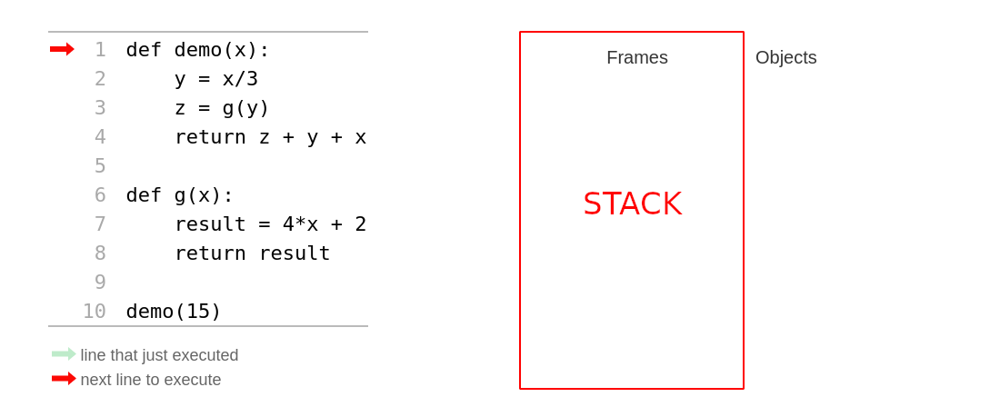
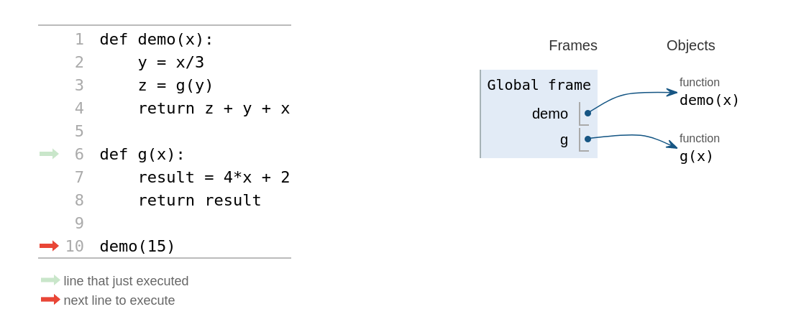
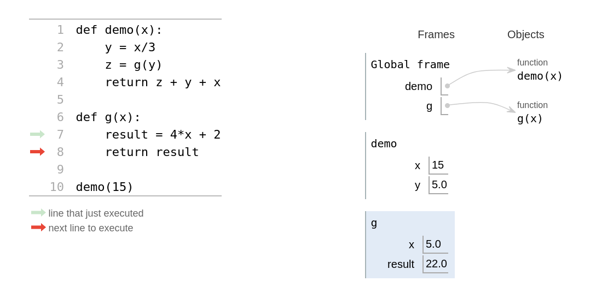

Functies¶
Fun met Python functies!
Computing¶
Berekeningen, handelingen op data
Een computer rekent, en daarmee voert het handelingen op data uit. Met data heb je kennisgemaakt en hoe dit door de computer wordt opgeslagen (denk aan de “dozen” in het geheugen en bits als fundamentele informatie-eenheid). Maar hoe worden bewerkingen op deze data uitgevoerd? We gaan kennismaken met een andere bouwsteen om te kunnen handelen: functies!
Handelen¶
Input en output
len("huiswerk")
8
Je hebt inmiddels al functies gebruikt, bijvoorbeeld de functie len(x). Deze functie accepteert een parameter (een waarde, de input) en geeft een resultaat terug (output). We weten of zien niet welke handelingen len(x) verricht, we weten alleen dat het een waarde terugggeeft. Laten we Python functies eens vergelijken met wat je al kent van andere disciplines, bijvoorbeeld wiskunde.

Googol is de wiskundige aanduiding van een getal met de waarde \(10^{100}\) (uitgeschreven een 1 gevolgd door 100 nullen). Dit is meer dan het aantal deeltjes in het waarneembaar heelal, maar minder dan het geschat mogelijk aantal zetten in een schaakspel (\(10^{120}\))!
En als iemand in het verleden niet een spelfout had gemaakt dan zocht je nu met Googol in plaats van Google … Laten we onze eigen “googoler” functie maken die elk getal tot de macht 100 kan verheffen.
Structuur versus procedure¶
Definieert een structuur: wat het is (en wat logischerwijs volgt)
Functies ken je uit de wiskunde en je zou een “googolige” machtsverheffing kunnen beschrijven als een functie. We beschrijven hier dat voor elke parameter \(x\) je deze als \(x^{100}\) terugkrijgt. Dit is de syntax die wiskudigen hebben bedacht om een structuur te beschrijven en wat daar logischerwijs uit zou moeten volgen.
def g(x):
return x**100
Defineert een procedure: wat het doet (en wat gedragsmatig volgt)
Python heeft ook functies. Het heeft de speciale syntax def (wat define betekent) om te zeggen “Ik definieer een functie”, in dit geval een functie met de naam g die een enkele parameter accepteert.
De combintie van naam en welke paramaters worden geaccepteerd wordt ook de signatuur van een functie genoemd, want dit is wat het uniek maakt en onderscheidt van andere functies die we gaan schrijven. Let ook op dat een functie definitie wordt afgesloten met de dubbele punt :!
Dit is al een stuk concreter, want anders dan de wiskundige beschrijving definiëren we hier een procedure (één of meerdere handelingen die uitgevoerd moeten worden op basis van een mogelijke input) en een resultaat dat mogelijk met het return statement wordt teruggegeven (output). Let ook op dat alles wat na de dubbele punt volgt moet worden ingesprongen om aan te geven dat het een codeblok is dat onderdeel van de functie is.
Syntax check! De dubbele punt geeft aan dat een nieuwe context volgt, je hebt dit bijvoorbeeld ook gezien bij conditionele statements als if:. De vuistregel is altijd inspringen na een dubbele punt!
Binnen een functie¶
def flipside(s):
""" flipside(s): spiegel s!
input s: een string
"""
x = len(s) // 2
return s[x:] + s[:x]
flipside("automaat")
'maatauto'
Laten we gaan kijken naar de binnenkant van functies. We hebben hier een functie flipside gedefinieerd die een string spiegelt. Je ziet dat functie len(x), floor division // en string slicing wordt gebruikt. Maar je ziet ook andere dingen, bijvoorbeeld binnen de functie een nieuwe variabele x en tekst tussen driedubbele aanhalingstekens """.
Docstrings¶
def flipside(s):
""" flipside(s): spiegel s!
input s: een string
"""
help(flipside)
Help on function flipside in module __main__:
flipside(s)
flipside(s): spiegel s!
input s: een string
Met een string met driedubbele aanhalingstekens direct na de dubbele punt documenteer je de functie (voor jezelf en voor anderen). Je beschrijft in deze docstring op de eerste regel kort wat de functie doet en verder andere informatie die nodig is, bijvoorbeeld de typen van parameters. Deze documentatie kan je altijd opvragen met help(x). Probeer dit ook een voor (ingebouwde) Python functies als (len(x) of print()).
Gebruik variabelen¶
def flipside(s):
x = len(s) // 2
return s[x:] + s[:x]
De lengte van de string is nodig om vervolgens met een floor division het aantal karakters tot het middelpunt van de string te bepalen. Dit aantal wordt aan de nieuwe variabele x toegekend en deze x wordt vervolgens 2 keer gebruikt voor het slicen van de string (de start- en stop waarden). We breken met het zetten van deze variabele x ook het probleem in stukjes op, en het scheelt ons typewerk!
def flipside(s):
return s[len(s) // 2:] + s[:len(s) // 2]
Je had de stap van het zetten van een variabele ook kunnnen overslaan en de start- en stop waarde voor het slicen van de string ook als resultaat van len(s) // 2 kunnen schrijven, maar je merkt al dat het minder goed leesbaar is. Het gebruik van variabelen helpt de leesbaarheid en zelfs de computer vind het prettiger omdat het efficiënter is: er hoeft maar één keer het aantal karakters tot het midden te worden berekend!
Variabelen opnieuw definieren¶
def convert_from_seconds(s):
"""Een getal naar dagen, uren, minuten en seconden
Zet een getal om naar naar een lijst van
[days, hours, minutes, seconds]
input s: een int
"""
days = s // (24 * 60 * 60) # aantal dagen
s = s % (24 * 60 * 60) # restant s
hours = s // (60 * 60) # aantal uren
s = s % (60 * 60) # restant s
minutes = s // 60 # aantal minuten
s = s % 60 # restant s
return [days, hours, minutes, s]
Gebruik variabelen en definiereer ze opnieuw als het nodig is! In dit voorbeeld wordt s steeds opnieuw gedefineerd op basis van het resultaat van een vorige handeling. Een floor division (//) wordt eerst gebruikt om bijvoorbeeld het aantal dagen te vinden en met het restant (%) wordt op dezlfde manier het aantal uren weer gevonden. Hetzelfde proces wordt herhaald voor het aantal minuten tot een restant aan aantal seconden overblijft.
Naast de docstring zie je ook commentaren: alles wat na een # volgt slaat Python over, het doet daar niets mee. Het is vooral voor mensen een manier om opmerkingen tussendoor te plaatsen. Let verder ook op het return statement waar de waarden als list wordt teruggegeven.
Return versus print¶
Wat is het verschil?
Je hebt eerder kennisgemaakt met print(x) en deze functie geeft iets terug, althans zo lijkt het! return geeft een resultaat van een functie terug, wat is nu het verschil met print(x)?
def dbl(x):
"""verdubbelt x?
"""
return 2 * x
a_dbl = dbl(20) + 20
Dit is een eenvoudige functie die een waarde verdubbelt en het resultaat teruggeeft met return. Nu een variant met print(x) in plaats van return:
def dbl_pr(x):
"""verdubbelt x?
"""
print(2 * x)
a_dbl_pr = dbl_pr(20) + 20
40
---------------------------------------------------------------------------
TypeError Traceback (most recent call last)
<ipython-input-5-f85fb4a1e955> in <module>
4 print(2 * x)
5
----> 6 a_dbl_pr = dbl_pr(20) + 20
TypeError: unsupported operand type(s) for +: 'NoneType' and 'int'
Dit geeft een fout op regel 6, waar we bij het resultaat van de functie 20 willen optellen. Waarom deze fout terwijl we wél een resultaat op scherm zien (40)? De verklaring is dat een functie zonder return niets teruggeeft en dat “niets” (verassend genoeg!) wél een waarde heeft, een waarde None (met type NoneType). None (“geen”) representeert het niets en Python zegt ons hier dat we 20 niet bij niets kunnen optellen!
Het niets is voor Python blijkbaar wel “iets” (None)!
Als je er bij stilstaat is dit niet zo gek. Wij mensen maken ook een onderscheid tussen iets en niets (en hebben daar woorden voor, iets of niets) en voor Python is in dit niet(s) anders: het heeft een manier nodig om niets te kunnen representeren en uit te drukken.
Het verschil¶
print wijzigt pixels op het scherm
return geeft resultaat van de functie-aanroep terug
return is de manier hoe software informatie aan functies doorgeeft, waar het resultaat (output) van de een de input kan zijn voor de ander.
Testen¶
# 1: functie definitie
def flipside(s):
""" flipside(s): spiegel s!
input s: een string
"""
x = len(s) // 2
return s[x:] + s[:x]
# 2: Tests
assert flipside('huiswerk') == 'werkhuis'
assert flipside('popster') == 'sterpop'
print(" toplap ~", flipside('laptop')) # print het resultaat naar het scherm
Voeg assert statements toe, waar assert een aanname betekent. Bijvoorbeeld, lees
assert flipside('huiswerk') == 'werkhuis'
als “neem aan dat het resultaat van de aanroep flipside('huiswerk') gelijk is aan de string 'werkhuis'”. Verder kan je natuurlijk altijd print statements gebruiken om waarden naar het scherm te printen!
None?¶
None is iets dat niets representeert, kan je dit ook testen?
assert dbl_pr(20) == None
Je ziet hier alleen 40 (vanwege het print statement, pixels op het scherm…) en verder niets en dit is ok! Dit betekent dat de aanname dat de aanroep dbl_pr(20) inderdaad None teruggeeft.
Quiz¶
Vraag¶
Functies kunnen andere functies aanroepen!
def demo(x):
y = x / 3
z = g(y)
return z + y + x
def g(x):
result = 4*x + 2
return result
Wat is het resultaat van demo(15)?
Probeer regel voor regel het programma zelf te volgen om tot het antwoord te komen!
Antwoord¶
42.0
Hoe functies werken¶
Hoe functies worden uitgevoerd: ze stapelen!

Python gebruikt speciaal deel van het geheugen dat de stack wordt genoemd waar het voor elke functie de variabelen een bijbehorende waarden in een frame zet (een stack frame). Op deze manier stapelen de frames zich op in de stack, traditioneel van onderen naar boven (onhandig als het om een stapel borden zou gaan!).

Je herkent hier de vraag van de quiz die we stap voor stap gaan doorlopen. Rechts van de code zie je de stack waar de frames worden geplaatst.

Het programma is nu ingelezen door Python en het eerste (algemene) frame is gezet, dit zijn de namen van de functies (dit zijn uiteindelijk ook variabelen) en een verwijzing naar waar de functies in het geheugen zijn opgeslagen. Dit is overigens een meer algemeen type geheugen dat de heap wordt genoemd.

De frame voor de aanroep van demo is nu toegevoegd met de variabelen x (de waarde die als parameter is meegegeven) en y. Maar wat nu te doen met de variabele z? De waarde van z is pas bekend als de functie g(y) een resultaat teruggeeft … Python plaatst nu een nieuw frame op de stack van precies deze aanroep.

In dit derde frame worden ook de variabelen gezet die horen bij de aanroep van g(5.0) en het resultaat zal worden teruggegeven.

z is nog niet zichtbaar in het tweede frame (voor de duidelijkheid is dit weggelaten) maar het is er zeker wel als een verwijzing aanwezig naar het de returnwaarde van het volgende frame!

Het resultaat van het derde frame wordt gezet als waarde van z van het tweede frame en het derde frame wordt vervolgens van de stack verwijderd.

Tot slot geeft het tweede frame de returnwaarde terug aan het eerste frame en zal het vervolgens ook van de stack worden verwijderd. Het programma is nu beeindigd en wordt ook het eerste frame van de stack verwijderd zodat we weer terug zijn bij de beginsituatie.
Let op, je ziet dat variabele x type int en y en z type float (decimale getallen) zijn. Python zal altijd kiezen voor het type met de hoogste precisie als type voor het resultaat als het gaat om numerieke waarden (in dit geval de optelling van verschillende typen).
Functies aanroepen¶
Functies kunnen andere functies aanroepen, maar … ook zichzelf?
Je hebt gezien dat functies andere functies kunnen aanroepen. Dit is een strategie om een groter probleem op te breken in kleinere problemen waar elke functie verantwoordelijk is voor een deel van het probleem. Maar als een functie andere functies kan aanroepen, zou een functie ook zichzelf kunnen aanroepen? Het antwoord is ja!
Quiz¶
Vraag¶
Een functie die zichzelf aanroept
def f(x):
if x == 0:
return 12
else:
return f(x-1) + 10*x
Wat is het resultaat van f(2)?
Antwoord¶
42
De stack¶
Wat gebeurt er als een functie zichzelf aanroept?
Hoe wordt de stack gevuld met met frames voor een functie die zichzelf steeds aanroept? Met andere woorden, hoe stapelt een functie zichzelf?!?

De eerste aanroep van f met parameter waarde 2 wordt aan de stack toegevoegd. De test faalt x == 0 (want x is 2) en regel 5 wordt uitgevoerd waar f zichzelf aanroept met de waarde x - 1 (1, want x was op dat moment 2).

Hier gebeurt weer hetzelfde, de test faalt want x is gelijk aan 1, niet 0. Vervolgens roept f zichzelf weer aan met de waarde 0 (1 - 1).

Er staan nu drie frames op de stack! Nu slaagt de test wel want x gelijk is aan 0.

De returnwaarde 12 van dit frame wordt teruggegeven.

Het resultaat van het derde frame kan nu worden ingevuld en het resultaat kan worden teruggegeven (12 + 10*1).

Het resultaat van het tweede frame kan nu ook in het eerste worden ingevuld en het resultaat worden teruggegeven (22 + 10*2). Tot slot wordt dit resultaat teruggegeven, f(2) is dus gelijk aan 42!
Tot slot¶
Elke functie is een op zichzelf staande eenheid!
Een functie is een zelfstandig handelende eenheid: zou informatica biologie zijn, dan zou je functies kunnen vergelijken met cellen. Ze kunnen de interactie met elkaar aangaan (zichzelf aanroepen) maar ook andere functies aanspreken die relevant zijn voor het oplossen van een bepaald probleem.

Stack Overflow is een populaire site waar je vragen kan stellen en antwoorden kan vinden die alles met programmeren te maken hebben. Aangezien het geheugen van een computer niet eindeloos is én je nu weet van de stack kan je je misschien iets voorstellen bij de fout waar deze site naar is vernoemd?